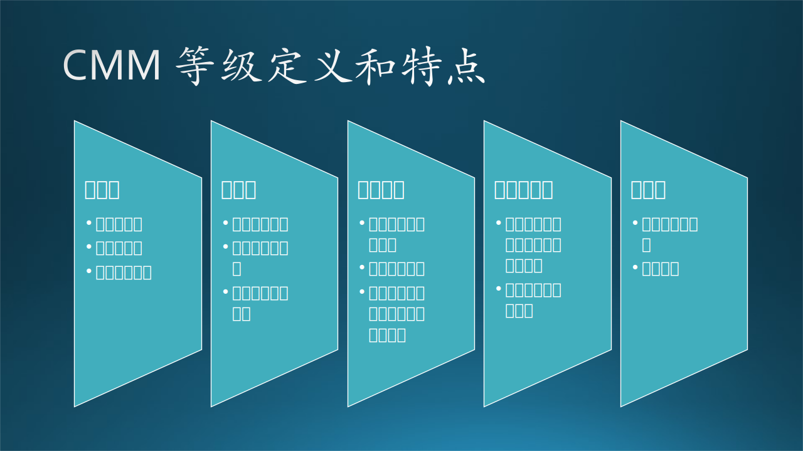
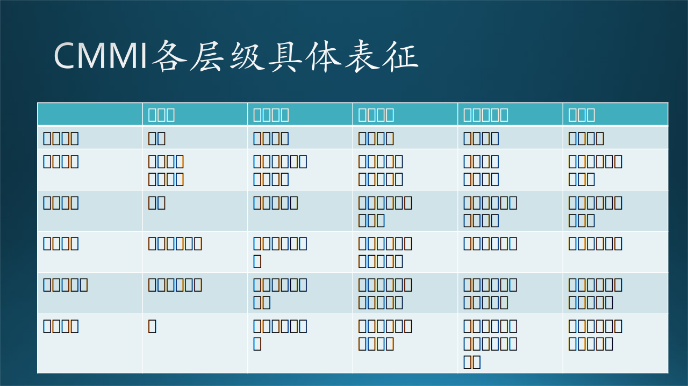
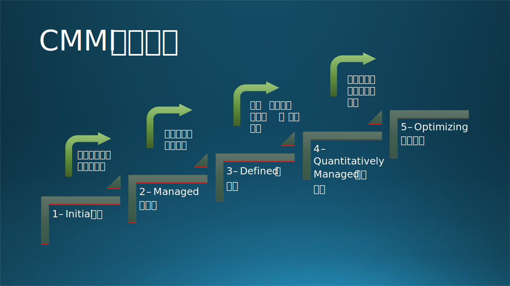

17.3 质量保障体系的构建
17.3 质量保障体系的构建⚓︎
结合上一小节对于质量内涵外延的探讨，软件研发团队建立有效的软件质量保障（SQA）体系一般涉及如下几个要点：
- 理解需求：首先，质量保障团队要充分理解要开发的软件产品和服务所满足的外部需求，明白目标用户期待什么、关注什么。
- 定义质量指标：结合产品的需求和用户场景，设定符合软件产品实际情况的质量目标，这可以参考我们上一节提到的一些核心指标：可靠性、性能效率、可用性、安全性等。
- 建立标准和过程：这是保障质量的关键一步。我们需要为团队制定一套清晰的、可执行的开发和测试标准，从行为和范式上定义什么是“正确的”，什么是有益于软件质量的。
- 实施质量保证活动：根据设定的标准和流程来将流程渗透到代码审查、自动化测试、性能测试的具体过程中，尽可能利用内部DevOps系统平台将他们以自动化的方式实施。
- 培训和教育：让你的团队理解和重视质量保证的重要性，提供必要的培训，使他们能够执行质量保证的任务。
- 持续评估、监控和改进：通过收集和分析各类数据、用户和团队反馈来监控软件质量，并根据结果对研发流程进行持续改进。
笔者认为，一个开发团队的QA体系并不是“设计”出来的，也不是大家一起“头脑风暴”出来的。体系的建立需要团队在合作、演进乃至犯错的过程中总结提升进行。软件的“质量真相”可能是一个很好的团队讨论议题。团队成员坐在一起，面对质量仪表和进度看板，审视自己团队产品的状况，从用户和验收的视角讲出软件质量的真实情况，形成有效结论，并设立一些仪式感的小程序来奖励讲出质量真相和提出好建议的同学。也可以从以下数据出发，围绕一些关键的质量能效指标来展开话题，比如：软件开发完成（Code Complete）之后Bug的数量、修复Bug所用的时间、用户的好评差评，以及软件能运行多久，平均初次错误时间（Mean Time To Failure）平均无故障时间（Mean Time Between Failure），这些都是重要的质效参考。
如果团队在这些内容的探讨上没有透明度、开放度，领导层也不重视，那么产品很容易进入自嗨、皇帝的新衣的困局中。换言之，我们需要质量真相的讲述者，“We need the quality truth teller”。本章开篇的故事中，如果没有小陈和木头追踪OOM的情况，展示真相，可能这个问题会被忽视；而上线仪表盘在bug优先级提升后，显示出警戒的红色，也有利于将这一情况广播出来，闻者足戒。
17.3.1 CMM能力成熟度模型与成熟度晋级要点⚓︎
以上我们简要从要点和文化层面探讨了质量保障体系，更多集中在“势”和“道”的层面。然而，具体的体系还需要能够实实在在地驱动团队行动起来的流程、工具和数据。
那么要落实到“术”和“器”的层面，我们还需要“法”，CMM能力成熟度模型就可以作为一个重要的参考，它的成熟度层级的定义也符合我们刚刚讲到的“演进”的概念。CMM（Capability Maturity Model，能力成熟度模型）是一个过程级别改进的训练和评估模型，旨在优化业务流程并达到更高效、更高质量的结果。这个模型最初是为软件开发工程设计的，但现在已经扩展到多种领域，包括产品开发和服务提供。CMMI（Capacity Maturity Model Integration，能力成熟度模型集成）是指将该模型应用到项目中的集成情况，是一套理论体系，包括模型、实施指导、工具系统、培训认证以及评定方法。由于CMMI在网络上结构化的公开资料非常多，我们将不会赘述其概念，而是基于该模型体系展开其对于软件质量保障的参考意义。
如下图，CMMI将产品开发业务流程为五个成熟度级别，从1（初始级别）到5（优化级别）：

-
初始级 (CMMI 1级)
- 状态: 新成立的软件公司默认在这一级别，过程无序、混乱。
- 特征: 依赖个体能力和“英雄主义”来救场。项目成功通常依赖个别杰出经理和有经验的软件团队。CMMI没有针对1级的评估，官方默认所有未进行CMMI评估的企业，至少具备CMMI 1级水平。
- 问题: 进度、预算、功能性和产品质量都是不可预测的。
-
可管理级 (CMMI 2级)
- 状态: 在部门或项目组范围内有基础的管理体系。
- 特征: 管理和控制已初步设置。项目有方针和规程，借鉴以往的成功实践。这样的的管理会快速帮助项目组或者部门提升开发工作的效率与质量，但是并没有在整个组织范围内推广开来。
- 问题: 主要集中在项目级别，而不是组织级别。
-
已定义级 (CMMI 3级)
- 状态: 组织范围内有统一、标准的管理制度。
- 特征: 整个组织的软件过程已文档化并标准化，有专职人员进行监督。CMMI3级是重要的承上启下的一环，因为组织范围内的统一管理，不仅有助于提高软件产品与服务的效能与质量，其稳定的过程可以为进一步的量化管理提供标准的分析数据，也帮助组织逐渐形成了管理的文化。
- 优势: 有助于进一步的量化管理和文化建设。
-
量化管理级 (CMMI 4级)
- 状态: 在稳定的基础上进行量化管理。
- 特征: 收集数据，建立基线与模型，实现过程和产品质量的定量预测。CMMI4级之前，主要是定性的方式进行管理；而从4级开始，组织在标准而稳定的过程下，收集软件开发过程中的数据，建立基线与模型，开启企业的量化管理之门。量化管理不仅可以将隐形的软件开发过程，通过数据显性的表达出来，还能基于企业的历史经验，在统计学方法指导下，预测项目的进展情况。
- 优势: 项目进展和质量可预测，有更多的度量指标。
-
持续优化级 (CMMI 5级)
- 状态: 组织内部形成了持续优化的文化。
- 特征: 不断寻求新技术和新方法，致力于绩效指标的量化提升。该级别最重要的是企业内部形成了自觉的持续优化文化。组织及其成员会不断寻求新技术、新方法，追求管理上可量化的绩效指标提升。这种文化，还为企业的管理变革和转型奠定了坚实的基础，帮助企业在取得阶段性胜利之后，跨越平台期，迈向下一个改进循坏的开始，促成进一步的成长。
- 优势: 为企业的持续成长和转型提供了坚实的基础。

最后，我们结合本章软件质量的主题，总结出一个组织或研发团队在CMMI标准下的成熟度晋级要点包括：
- 从1级到2级: 主要关注项目管理的过程改进。
- 这个过程中组织的主要注意力应该在项目和具体的过程质量上，组织应该推动制定项目级质量保障计划，明确基础的质量指标和各个发布节点的检查清单；和开发团队协定代码编写的规范和约定，完善代码评审流程。
- 从2级到3级: 主要关注组织级的过程全面改进。
- 该层面的注意点在于审视组织架构、权责定义和划分，如果必要的话要进行组织重构；完善软件质量的培训体系，鼓励大家重视质量；对于出现的线上质量问题，大家开诚布公地共同反思（切忌，这类会议一定要要建立坦诚和鼓励包容的氛围，不要搞成甩锅大会），并让大家意识到软件质量问题的严重性，并真正能从错误中学习成长，不断变强。
- 从3级到4级: 着重于过程定量管理的改进。
- 这时团队在质量保障的意识层面是上下一心的，那么用数据和量化手段去进一步推进科学管理就比较顺理成章，团队就要关注质量数据收集和分析，从用户和外部要求出发，立足产品目前的实际质量情况，建立质量基线和模型，然后将数据用可视化的手段呈现出来，进而再实现对指标的持续监控。
- 从4级到5级: 聚焦于技术革新和过程优化的改进。
- 最后，团队可以关注不断利用新的技术创新手段（如智能异常模式识别、数据预测系统、智能诊断分析），持续改进，让整个质量保障体系更加自动化和智能化；也可以考虑一部分核心指标形成KPI或者OKR，和团队的绩效挂钩，更好的激励团队在质量上精进。

17.3.2 常用技术手段⚓︎
在项目开发和实施的“术”的层面，软件质量保障的技术手段是比较多元的。这里笔者依据从代码编写、编译构建到上线的先后时间顺序，列出了一些常用的、和研发过程直接相关的技术手段，不再分别展开描述，仅作参考：
- 集成开发环境的协同编程工具和助手
由于我们谈的是“术”的层面，就不再考虑设计层面的质量考量，那么，编写代码就往往会成为产品质量“形成”的起始点，集成开发环境，也就是我们常说的IDE，就非常重要，他们往往提供了内置的检测和代码生成（比如Visual Studio的IntelliSense，IntelliJ的Code Inspection等，还有最新的GitHub Copilot X在Visual Studio Code中提供的各种插件：Copilot Chat，Copilot Lab等），这些工具和助手帮助工程师们做了很多工作，包括程序代码的编写、调试和版本控制等。这些技术不仅关乎效率，也关乎“第一手”代码的质量。
在版本控制层面，笔者早年开发还和团队实践过利用Git Hook功能在代码提交、推送等时间节点上嵌入质量脚本，进行质量检查的方案，现在Jira、Jenkins等平台已经很成熟，貌似很少有团队还在利用Git Hook做质量卫士（Quality Gatekeeper）了。
- 静态代码分析和扫描
这类技术一般在不实际运行代码的情况下，自动地检查和分析源代码或构建产物中的机器码以查找可能存在的逻辑漏洞或编码不当之处。在持续集成流程中加入代码分析工具，如SonarQube、Checkmarx、CheckStyle、Fortify、lint、errorprone等，自动标记出可能的代码问题和安全隐患。目前这个技术下的各类成熟和开源方案比较多，可以比较方便的集成到各类持续集成系统中。
笔者认为这类方案中非常值得借鉴和学习的是其中对于代码常见错误或违规（Violation）的定义，这些定义是大量编码经验总结和分类之后汇总成的宝藏“错题本”，定义了违规和错误的模式、危害和修复建议，而且往往有非常详尽的说明和文档，从中可以学到很多有价值的编码知识，推荐大家去涉猎。
- 代码评审
即Code Review，现在大部分团队都用上了Gerrit、GitHub、GitLab这类支持Code review workflow的平台，来让人工代码检查合理地接入到研发流程当中，大家可以在Pull request里直接针对相关的代码上下文反馈、建议、讨论和甚至聊天（也可以吐槽和互喷）。
这项技术也很成熟了，开发实战中的核心要点在于，我们应该如何定义某个代码改动谁来评审，多少人来评审。这些约定往往体现了团队的质量文化，以及反映了开发团队人员的权责、资深情况。相关的技术实施一般通过代码托管平台的权责规则定义来实现，例如GitHub Code Owners、Azure DevOps Branch Policy这样的功能模块。笔者所在的团队以前为了鼓励大家多多评审，还尝试过利用平台所提供的API，把团队所有开发的评审条数、PR贡献数做成英雄榜展示给大家，十分有趣。
- 软件质量仪表盘和异常监控
质量标准仪表盘，或者叫“质量数据大屏”，并不是一项单纯的数据可视化的技术，它是团队建立质量标准、数据埋点和统计量化、可视化仪表设计、基线认同设定等工作搞定后的最终成果呈现，一般意味着这个团队已经有较高的成熟度。
如果一个质量仪表盘视图能量化地呈现团队开发的软件产品的质量真相，从而帮助团队作出可靠的定性判断，那么它对于这个产品和团队的价值是不可估量的。产品质量情况需要透明度，一个缺乏用户质量感知的团队是无法生存下去的。
Azure DevOps平台就支持构建Dashboards功能，可以较好地展现当前团队关键bug数量和优先级等核心信息，再结合一些线上数据（如宕机率、应用卸载率、差评率）监控手段，就足以驱动团队向持续优化的方向演进。对于新成立的团队，也可以尝试使用Grafana和Prometheus等开源工具进行实时性能和错误监控。
以上几个技术无法涵盖整个软件质量保障体系下的技术生态，近年来可观测性和ELK stack的概念的火热也说明了该领域的重要性。在微软，各个团队采用不同的手段保证质量，有的项目没有专门的QA，是PM/Dev兼任，这种组织主导下的质量保障更多融入于生产过程中，更灵活；而有QA的组织会有更明确的分工、职责和程序，可以清楚地看到有两股驱动力在打磨产品。但不管是哪种模式，各个团队都会采用静态代码分析一类的自动化手段提高效率，采用威胁建模（Threat Modeling）来进行风险暴露和评估，使用扫描工具来检查关键信息和秘钥泄漏，由专门的产品安全团队检查代码的安全性，进行全面的安全性检查。
17.3.3 未来展望⚓︎
进一步讲，一个理想的质量保障体系，可能涉及到软件开发、团队合作的诸多方面，以下是一段“蓝图”的描述：
假设你是一位全栈产品经理，专精用户体验，熟知我们的客户、系统，且能定义关键指标。你理解应用与服务间的互动与协定，使用自助工具获得所需答案。昨天，你刚和团队一同庆祝达到5000万月活跃用户的重要里程碑，与客户公司高层共享喜悦。今晨，你打开我们的服务质量（Quality of Services）仪表板，看到：
- 应用和平台关键服务水平目标（SLOs，Service Level Objectives）的视图。理想体验的用户端设备比例创纪录的达到了99.5%。
- 上次重大缺陷进入生产环境已经54天。你记得参加的缺陷原因分析，以及改善异常检测的解决方案。
- 绿色标识代表成功的自动化测试运行及覆盖范围，包括单元、组件、集成、压力、UI和长期测试。
- 事件部分显示，服务在昨晚的Beta环境中，根据端到端的性能SLOs，自动回滚了部署。这个构建需要复查。
- 发布部分证实已发布的功能和应用版本满足所有发布条件，包括可靠性、性能、检查表和记分卡。顶部显示一些“待定”功能，直到满足质量标准，持续集成系统中明确了下一步及负责人。
- 客户反馈问题部分显示，有新的质量问题在内部被报告。你点击查看受影响的用户总数、各个用户的“服务稳定系数”，自动分析显示消息节点出现问题。用户的“服务稳定系数”低于预期目标时，会自动生成包含诊断数据的错误报告。
- 客户反馈部分显示，最大的10个请求都是新功能需求。其中一条关于与外部游戏厂商集成的想法引人注目。总体情感得分和词云显示用户喜爱最新的应用版本。
- 商业指标部分显示了基于参与度、使用情况、可靠性、性能和应用评级的最新预测。联系质量洞察与商业指标需要大量工作，但现在已经行之有效。
在这个“蓝图”中，我们可以看到一些现在已经广泛应用的测试工程化、持续集成和持续交付、代码审查和静态代码分析、数据驱动的质量保障、用户为中心的反馈处理系统和自动缺陷分析等质量保障技术和流程。
在未来，AI和大语言模型一定会大举赋能软件质量保障，推动质量智能化时代的到来，越来越多的团队达到 CMM “持续优化”的成熟度的成本降低、可能性不断增加：
- 软件质量保障智能化: 随着AI和机器学习技术的发展，我们预期它们将在软件质量保障中扮演更重要的角色。例如，AI可以用于预测哪部分代码最可能出现缺陷，或者用于自动化地生成测试用例。不限于以下方面：
- 智能代码生成。
- 代码质量智能分析，代码质量“格式刷”。
- 智能代码评审助手将直接参与到代码评审环节中，辅助对代码风格、规范化、潜在bug提出针对性建议。
- 工程化测试用例智能生成方案。
- 代码逻辑可视化和模块链路分析，诊断建议。
- 智能日志分析、监控预警。
- 基于云的质量保障: 随着云计算的普及，基于云的质量保障服务（如云测试、云构建等）将得到更广泛的应用。
- 更大规模的自动化和集成: 随着DevOps和自动化工具的进步，我们预期在质量保障流程中的自动化和集成将进一步扩大，可以处理更大的代码模块的设计、重构，本根据团队的风格、约定进行定制化支持。
最终，在AIOps、LLM等智能技术的赋能下，软件的质量保障是否可能在特定领域可以实现一站式服务，我们只需要写代码，系统能够自动构建、分析、扫码、测试问题，自动出具综合质量报告，并提供修复建议？就像前一章小陈老张在食堂聊的“无人办公室”一样工作？这听起来很不可思议，但似乎在越来越近。